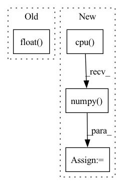

Pattern ID :35853
Before Change
if self.n_classes > 1:
loss = self.loss_fn(bag_logits, bag_labels.long())
else:
loss = self.loss_fn(bag_logits.squeeze(1), bag_labels.float() )
predicted_probs = self.activation_fn(bag_logits)
if self.n_classes > 1:After Change
results = dict()
if self.analyse_loss and stage in [ModelKey.TRAIN, ModelKey.VAL]:
loss_per_sample = self._compute_loss(self.loss_fn_no_reduction, bag_logits, bag_labels)
results[ResultsKey.LOSS_PER_SAMPLE] = loss_per_sample.detach().cpu().numpy()
bag_labels = bag_labels.view(-1, 1)
for metric_object in self.get_metrics_dict(stage).values():In pattern: SUPERPATTERN
Frequency: 3
Non-data size: 4
Instances Fragment ID: 101887649
Project Name: microsoft/hi-ml
Commit Name: e2c1ca1cb4d224378df8209befd08e7ebcc136d5
Time: 2022-10-12
Author: 37396332+kenza-bouzid@users.noreply.github.com
File Name: hi-ml-cpath/src/health_cpath/models/deepmil.py
M Class Name: BaseDeepMILModule
N Class Name: BaseDeepMILModule
M Method Name: _shared_step(4)
N Method Name: _shared_step(4)
M Parent Class: LightningModule
N Parent Class: LightningModule
M File Name: hi-ml-cpath/src/health_cpath/models/deepmil.py
N File Name: hi-ml-cpath/src/health_cpath/models/deepmil.py
M Start Line: 302
M End Line: 325
N Start Line: 311
N End Line: 334
Before Change
else:
self.process()
output_img = self.post_process()
output_img = output_img.data.squeeze().float() .cpu().clamp_(0, 1).numpy()
output_img = np.transpose(output_img[[2, 1, 0], :, :], (1, 2, 0))
if img_mode == "L":
output_img = cv2.cvtColor(output_img, cv2.COLOR_BGR2GRAY)After Change
else:
self.process()
output_img_t = self.post_process()
output_img = output_img_t.data.squeeze().float().cpu().clamp_(0, 1).numpy()
output_img = np.transpose(output_img[[2, 1, 0], :, :], (1, 2, 0))
if img_mode == "L":
output_img = cv2.cvtColor(output_img, cv2.COLOR_BGR2GRAY)
del output_img_t Fragment ID: 101887652
Project Name: sczhou/codeformer
Commit Name: 581abcb93b238be31d0cfea8978c3d204114bc1b
Time: 2022-09-04
Author: shangchenzhou@gmail.com
File Name: basicsr/utils/realesrgan_utils.py
M Class Name: RealESRGANer
N Class Name: RealESRGANer
M Method Name: enhance(4)
N Method Name: enhance(4)
M Parent Class:
N Parent Class:
M File Name: basicsr/utils/realesrgan_utils.py
N File Name: basicsr/utils/realesrgan_utils.py
M Start Line: 199
M End Line: 211
N Start Line: 199
N End Line: 211
Before Change
else: // cmap: [256, 3|4] uint8
assert isinstance(cmap, torch.Tensor) and cmap.shape[0] == 256
heatmap = cmap[(heatmap * 255).long()].transpose(1, 3).transpose(2, 3)
heatmap = heatmap.float() / 255
// Note that C==4 for most cmaps
heatmap = torch.as_tensor(heatmap.transpose(0, 3, 1, 2)) // (N, C, H, W)
return heatmap[0] if squeeze_flag else heatmapAfter Change
def apply_cmap(heatmap: torch.Tensor, cmap: Union[Colormap, torch.Tensor] = jet) -> torch.Tensor:
if cmap is None:
return heatmap
heatmap = heatmap.detach().cpu()
squeeze_flag = False
if len(heatmap.shape) == 2:
heatmap = heatmap.unsqueeze(0) // (N, H, W)
squeeze_flag = True
if isinstance(cmap, Colormap): // Note that C==4 for most cmaps
heatmap = torch.as_tensor(cmap(heatmap.numpy() )) // (N, H, W, C)
else:
cmap = torch.as_tensor(cmap)
assert cmap.shape[0] == 256 // cmap: [256, 3|4]
heatmap = cmap[(heatmap * 255).long()] // (N, H, W, C) uint8
heatmap = heatmap.transpose(1, 3).transpose(2, 3).float() // (N, C, H, W)
heatmap = heatmap / 255 if heatmap.max() > 1 else heatmap // (N, C, H, W) float
return heatmap[0] if squeeze_flag else heatmap
Fragment ID: 101887646
Project Name: ain-soph/trojanzoo
Commit Name: 80e74988c8d77c00322fd1144f83d6ff4e5ee2cb
Time: 2020-12-31
Author: ain-soph@live.com
File Name: trojanvision/utils/__init__.py
M Class Name: AnonimousClass
N Class Name: AnonimousClass
M Method Name: apply_cmap(2)
N Method Name: apply_cmap(2)
M Parent Class:
N Parent Class:
M File Name: trojanvision/utils/__init__.py
N File Name: trojanvision/utils/__init__.py
M Start Line: 14
M End Line: 27
N Start Line: 15
N End Line: 29